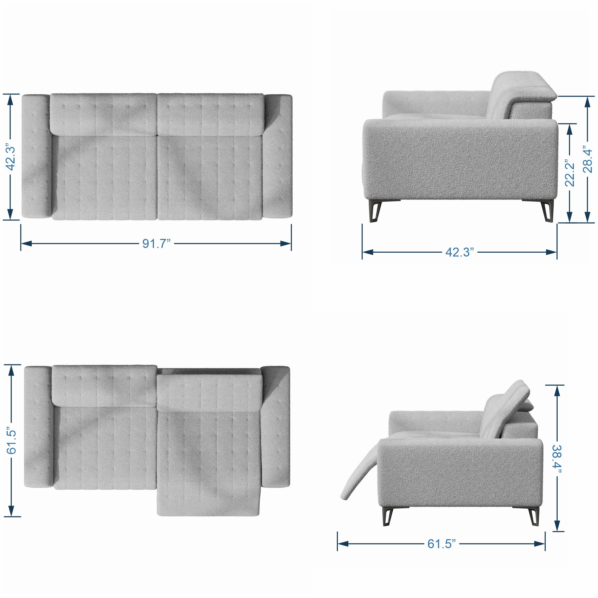

Sydoryk Oleh
Sofa visualization
Client requested high quality images for whole line of sofas.
Each sofa needed multiple variations. In total 28(sofas) * 15(colors) * 6(angles) = 2520 images. Some sofas also required different variations to show how mechanism works.
Usually these renders would be a big and complicated task, but using Houdini Solaris I was able to build a system that was easy to manage and make any adjustments for any particular sofa/angle/color configuration.
I had to rebuild low quality CAD models into high resolution meshes by using different workflows(remeshing, retopology, VDB conversion and vellum simulation).
I build a system to automatically assemble scene and center camera around sofa with proper parameters for each camera angle.
With this setup I was able to output properly organized and named files.
I was able to optimize render times by rendering unique part of the image only once and combining all parts in compositing.
Here are sofas with the same color and angle:

Let's look at few angles for single sofa in full resolution:


{kind=link}
Here are all possible variations for single sofa:
{kind=link}
Example of switching between different models, camera angles and sets:
Houdini Stage, this is where whole scene is setup:

Houdini Comp, final image assembly happens here:

Houdini TOPs, this is used to automate renders and comp jobs:

I also rendered top view for each sofa, so that it can be used in dimensions image:
